Apps · Gateways · Setup · Debug
Design surface for the gaps called out in the accepted PAP-11150 plan: paste-and-activate mcp.json, named gateways with bearer tokens, copyable client snippets, a board-readable approvals queue, audit with policy explanations, a connection test console, missing-credential reconnect, and MCP elicitation passthrough. Board-readable defaults first, raw protocol/log detail under Advanced.
AG1Apps shell with Gateways tab
Top-level Apps surface adds a Gateways tab between Gallery and Activity. Summary strip surfaces the four numbers a prosumer cares about at a glance — Connected · Needs attention · Gateways · Approvals today.
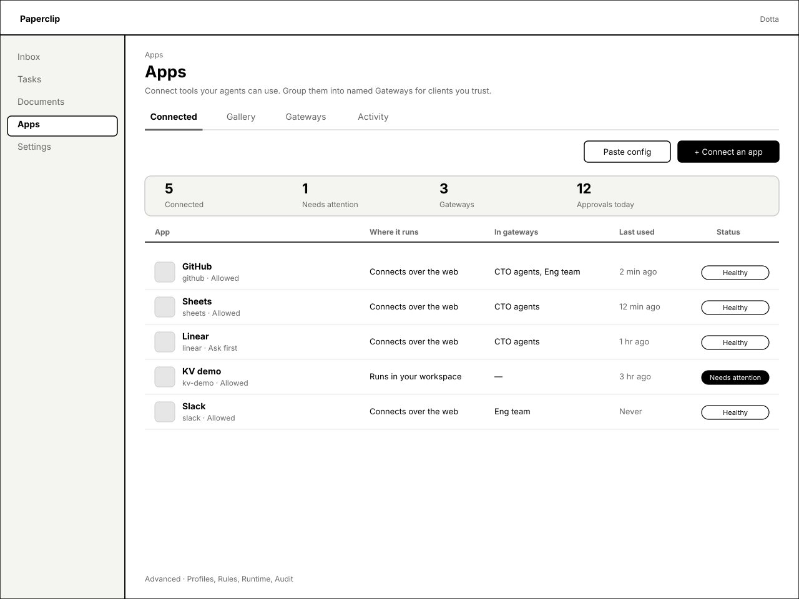
Pixels show
- Tabs: Connected · Gallery · Gateways · Activity. Profiles / Rules / Runtime move under a single Advanced link in the footer.
- Summary strip is the single source of triage truth — every count is a clickable filter.
- "In gateways" column tells you immediately which apps a client can already use; a "—" reads as "this app isn't in any gateway yet."
- Two primaries: + Connect an app (gallery wizard) and Paste config (existing PasteConfigTab, now lifted into a modal).
AG2Paste config modal
The mcp.json paste experience as a focused modal launched from the Apps header. Two tabs: Paste JSON (default) and Upload file. Sample-config helper and explicit security copy.
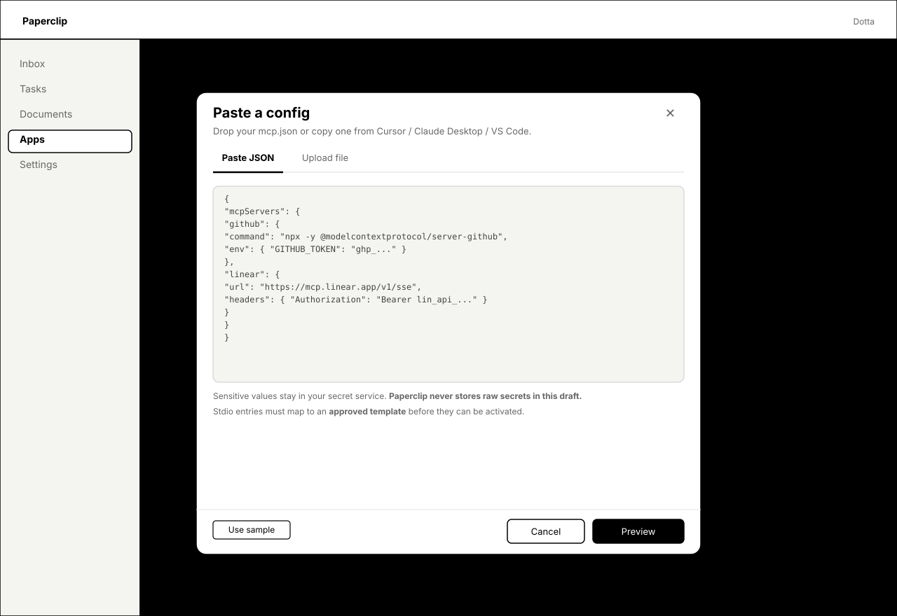
Pixels show
- Textarea uses monospace and accepts the exact JSON shape from Cursor/Claude Desktop/VS Code.
- "Sensitive values stay in your secret service" copy keeps trust front-of-mind during paste.
- Stdio-restriction copy: explicit that stdio entries must map to an approved template — preserving the safety boundary in
PAP-11088. - One dominant action: Preview. Cancel + Use sample are secondary.
AG3Import preview & secret replacement
After Preview: one card per server, each labeled Needs review or Ready. Required keys render as labeled fields with Save as secret or Use existing… affordances. Remote servers that advertise OAuth surface a Sign in instead nudge.
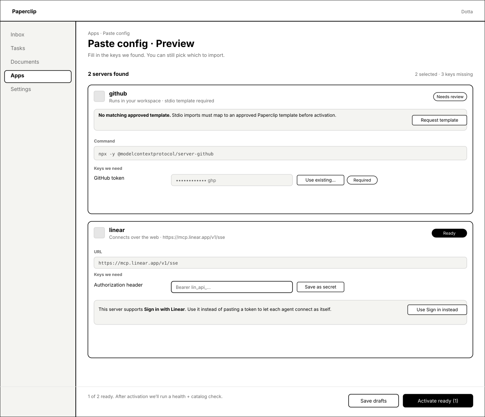
Pixels show
- Per-server state chip — Ready vs Needs review. Status counts in the page header.
- Stdio card: hard block banner ("Stdio imports must map to an approved Paperclip template") + Request template shortcut.
- Remote card: each detected secret has its own labeled field, masked. Two paths per field: Save as secret (one-tap mint into Paperclip's secret service) or Use existing… (pick a Paperclip secret already on file).
- OAuth nudge appears when the upstream advertises auth metadata (Phase 3 of the plan): "Sign in with Linear" replaces the bearer token entirely.
- Footer makes the partial-import explicit: Activate ready (1) vs Save drafts.
AG4Activation review — catalog & risk
After Activate: a 4-step stepper (Health · Catalog · Review tools · Activate). Health summary above a tools table with risk chips and default-access picker. Destructive tools default to Off; write tools default to Ask first.
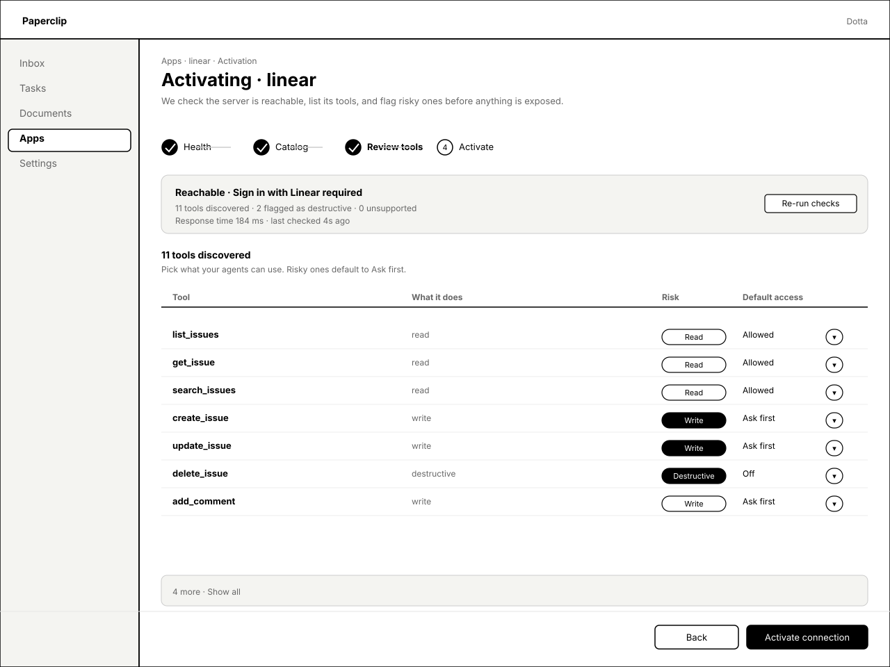
Pixels show
- Health summary: reachable + auth status, response time, last-checked timestamp, and Re-run checks affordance.
- Risk chips: Read · Write · Destructive (filled). Read defaults to Allowed; Write to Ask first; Destructive to Off.
- Default access dropdown per row uses the same Off · Allowed · Ask first vocabulary as Profiles (PAP-10978) and AppDetail (PAP-10859).
- 4-step stepper anchors progress; previous steps are checkmarked so re-entry from notifications is intuitive.
AG5Bulk new-tool review
When a connection's schema hash changes, the new tools surface here. Quarantined (destructive) tools default Off; write tools default Ask first. Bulk approve with one click.
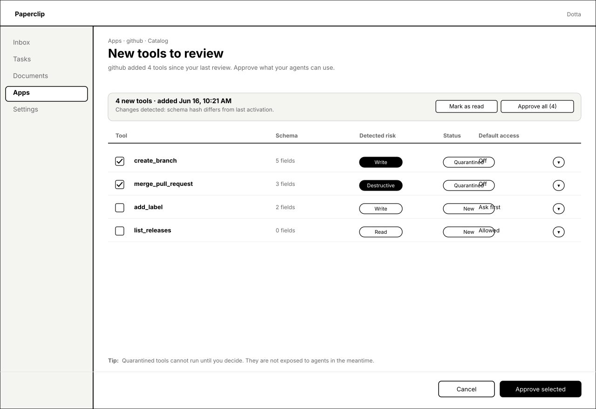
Pixels show
- Top action bar shows when the change was detected and a one-click Approve all (4) for low-risk bulk acceptance.
- Schema-diff hint ("Changes detected: schema hash differs from last activation") explains why a review is needed.
- Per-row checkbox honors selection state; Approve selected is the dominant footer action.
- Quarantine status carries the safety message: "cannot run until you decide" — covered by the bottom helper text.
AG6Gateways list
List of named gateways. Each row exposes scope, app count, token health, and an on/off toggle. The bottom helper card teaches the mental model: "a gateway is one safe MCP endpoint…"
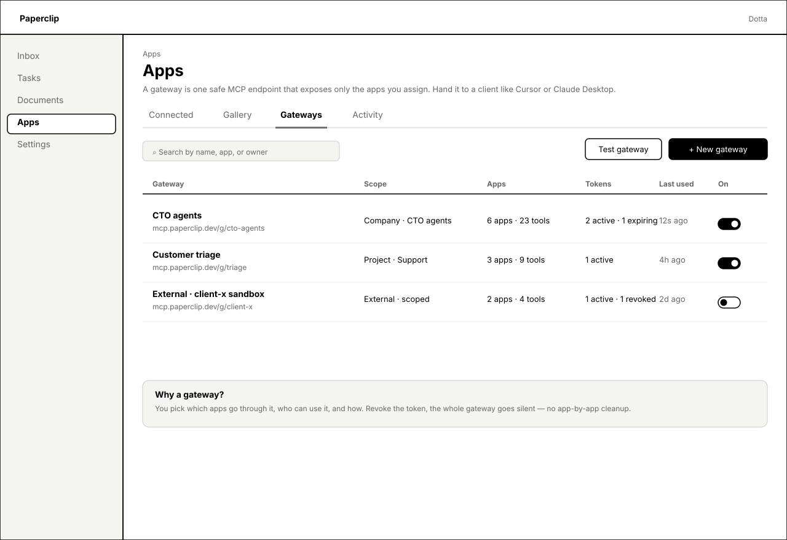
Pixels show
- Gateway row pattern: bold name on top, muted MCP endpoint URL below — same hierarchy as the existing Apps list.
- Scope column maps to the Paperclip context (Company / Project / External · scoped) called out in the plan.
- Tokens column is a sentence summary: "2 active · 1 expiring" — the detail lives on the Tokens tab.
- Off toggle disables the whole gateway in one place — the kill switch a prosumer needs in an incident.
- Bottom helper card defines the concept on first sight, addressing the Paradox of the Active User.
AG7Gateway detail — overview
Four summary cards (On · Apps · Tokens · Health), a Who can use it panel binding scope + profile + rules + the inbox approval target, then assigned apps and a preview of the client snippet.
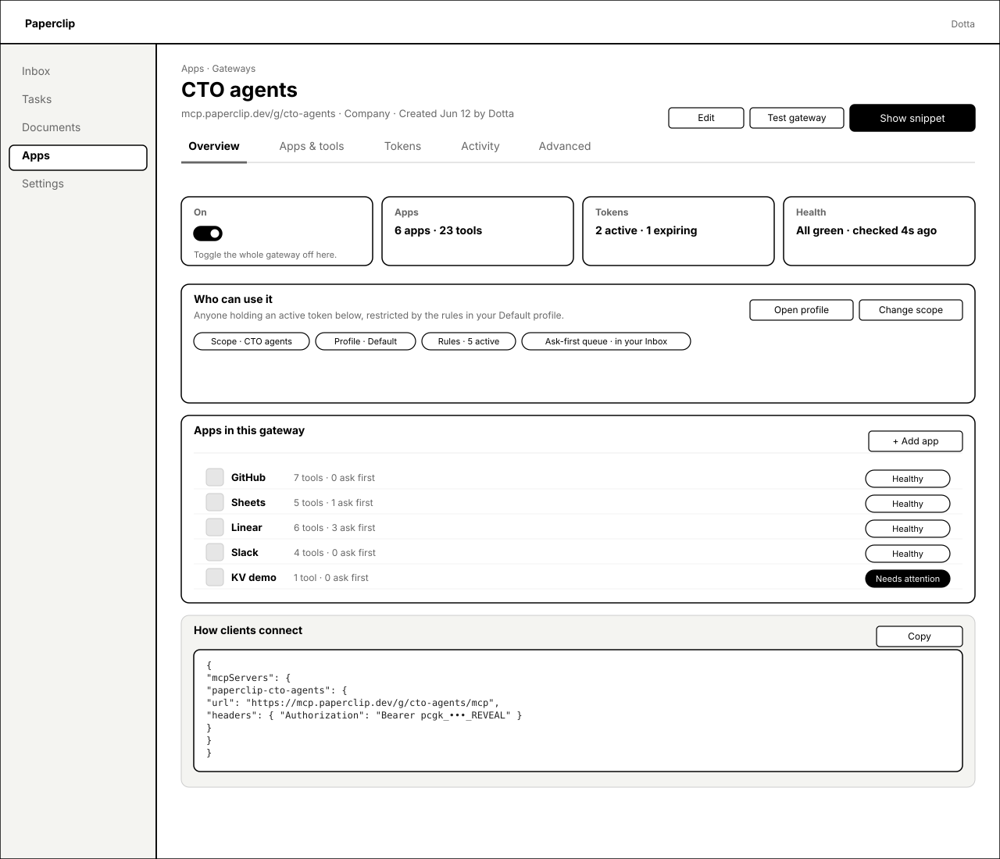
Pixels show
- Show snippet is the primary action — copying the snippet is the most common task on this page.
- Who can use it chips translate scope/profile/rules into one readable row; each chip is a pivot link.
- Inline app list reuses the Apps list pattern with the same status chip vocabulary.
- Client snippet preview is a single read-only code block; full picker lives in AG8.
AG8Client snippets dialog
Modal with left-rail tabs: Cursor · Claude Desktop · VS Code · OpenCode / Claude Code · Raw URL. Each renders the exact JSON or URL for that client. Token reveals once on copy with a clear "treat this like a password" reminder.
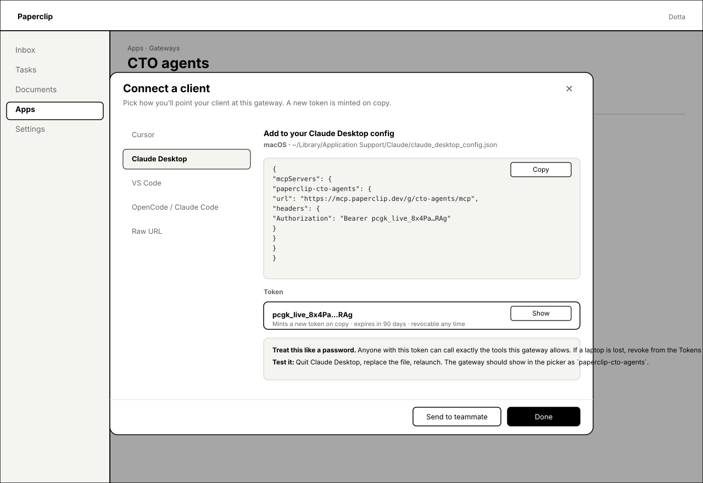
Pixels show
- Per-client tab + file-path hint ("macOS · ~/Library/Application Support/Claude/…") so the user knows where the snippet goes.
- Code block uses the same monospaced treatment as PasteConfigTab. Copy is colocated with the snippet, not under it.
- Token sub-block makes minting+expiry+revocation explicit. "Mints a new token on copy" prevents the "where do I get a token?" loop.
- Test hint at the bottom gives the user one-sentence verification.
- Send to teammate creates a one-time secret-sharing link (out of scope for V1 if needed).
AG9Tokens — mint, reveal-once, revoke
Per-gateway token list. New tokens reveal-once at the top with explicit "you won't see this again" copy. Each row shows owner / created / last used / expires / status with a triple-dot menu for rotate & revoke.
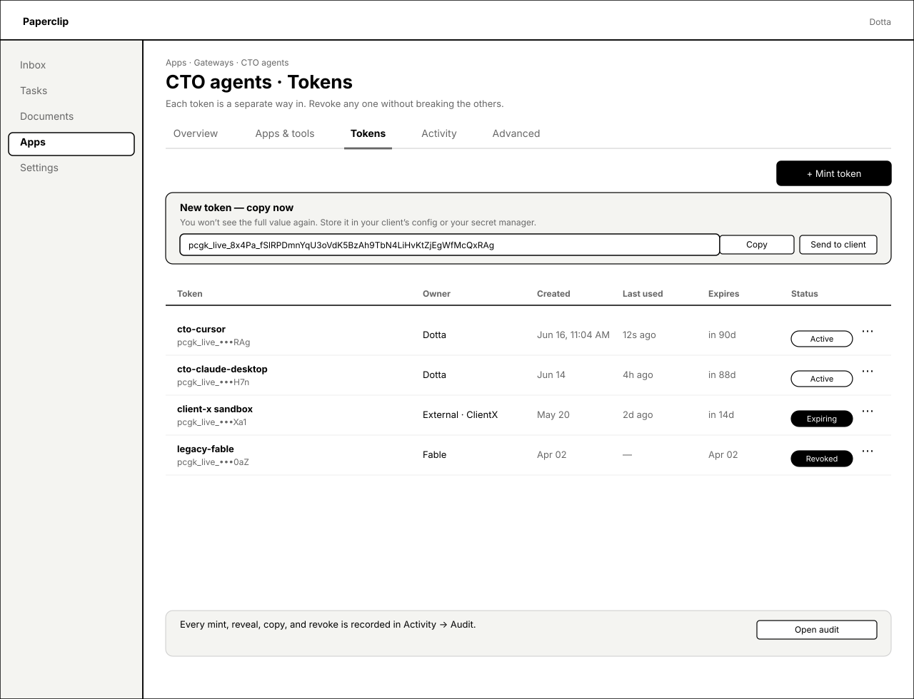
Pixels show
- Reveal-once banner — single source of truth for "I just minted; copy now". Replaces the typical "we'll email it to you" anti-pattern.
- Owner column distinguishes board-owned, agent-owned, and external client tokens — directly supports the credential-resolution ownership table in the plan.
- Expiring/Revoked status chips are filled (high-contrast) so they read as the exception, not the rule.
- Triple-dot row menu: Rotate · Revoke · Rename · Copy fingerprint.
- Bottom strip closes the audit loop: every mint/reveal/copy/revoke is recorded in Activity.
AG10Pending approvals / Ask-first queue
Consolidated approvals inbox. Filter chips for gateway, risk, and external clients. Each card is a sentence: Who · App · Tool · Args · Time · Via gateway. Primary action Approve, secondary Deny, soft Always allow.
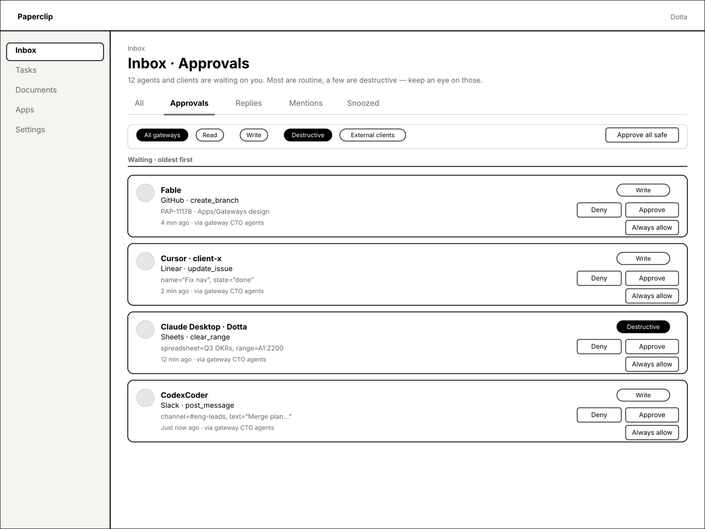
Pixels show
- Inbox tab — approvals live in the same surface as agent replies / mentions, so they get the same attention as a human ping.
- Filter chips: All gateways · Read · Write · Destructive (filled) · External clients. "Destructive" is filled by default so destructive items pull the eye first (Von Restorff).
- Each card is one sentence with cardinality, not a JSON dump. Truncated arg preview is enough to triage.
- Approve all safe in the top right covers the everyday case for low-risk batches.
- Always allow → opens the rule builder pre-filled with the matching argument shape (linking back to PRA3).
AG11Audit timeline + policy explanation
Two-pane debug view. Left: filtered event list. Right: selected event with a Why it was blocked card that names the matched rules in order, plus arg-by-arg detail. Follow-up actions become one-click.
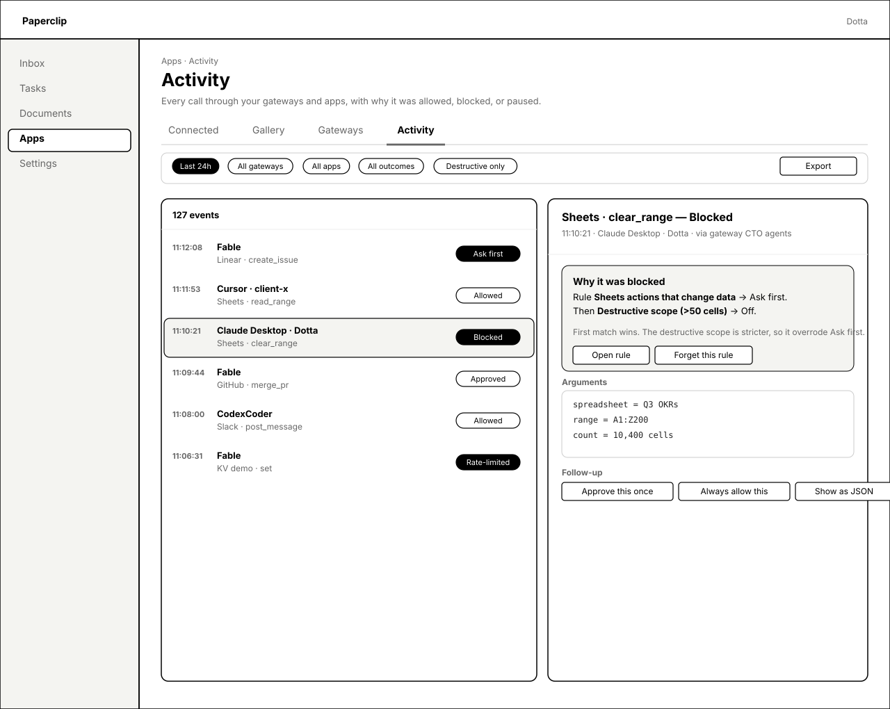
Pixels show
- Selected row is highlighted with the SOFT background — same focus treatment as the Inbox list.
- Why it was blocked card uses the same sentence pattern as Rules (PRA1): "Rule X → Ask first. Then Y → Off. First match wins." This is the policy explanation payload the plan calls for.
- Arguments shown one per line in mono, not buried in raw JSON. Power users can click Show as JSON.
- Three follow-up actions: Approve this once · Always allow this · Show as JSON — covering the common debug → fix loop in one place.
AG12Connection / Gateway test console
Run a tool against this gateway as a board test actor. Goes through every rule, approval, and audit path a real client would — so the operator can prove the policy works without spinning up Cursor.
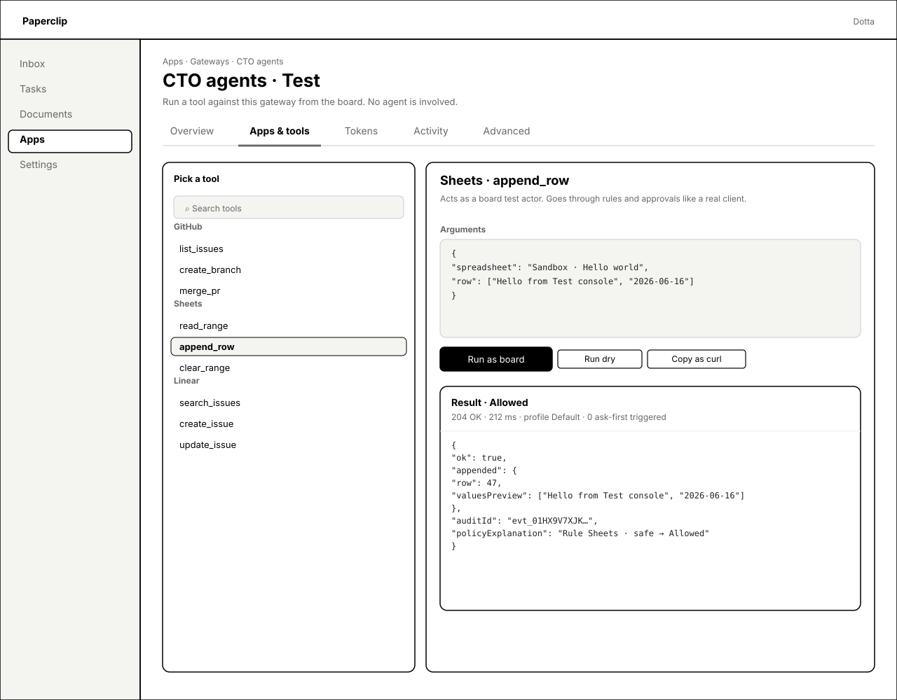
Pixels show
- Tool picker grouped by app (matches AppDetail), search at the top.
- Arg editor is a single JSON textarea — the test console is for power users; sentence builders would be overkill here.
- Three run modes: Run as board (primary, real audit row), Run dry (policy decision only, no upstream call), Copy as curl (paste into terminal).
- Result block surfaces both the upstream response and a policyExplanation string — same vocabulary as AG11.
- Goes through the same rules and approvals as a real client — proven by the audit ID in the response.
AG13Missing credential — reconnect path
When a credential expires or fails, the app surface flips to a reconnect-first layout. Paused calls show what's queued — they auto-resume after reconnect.
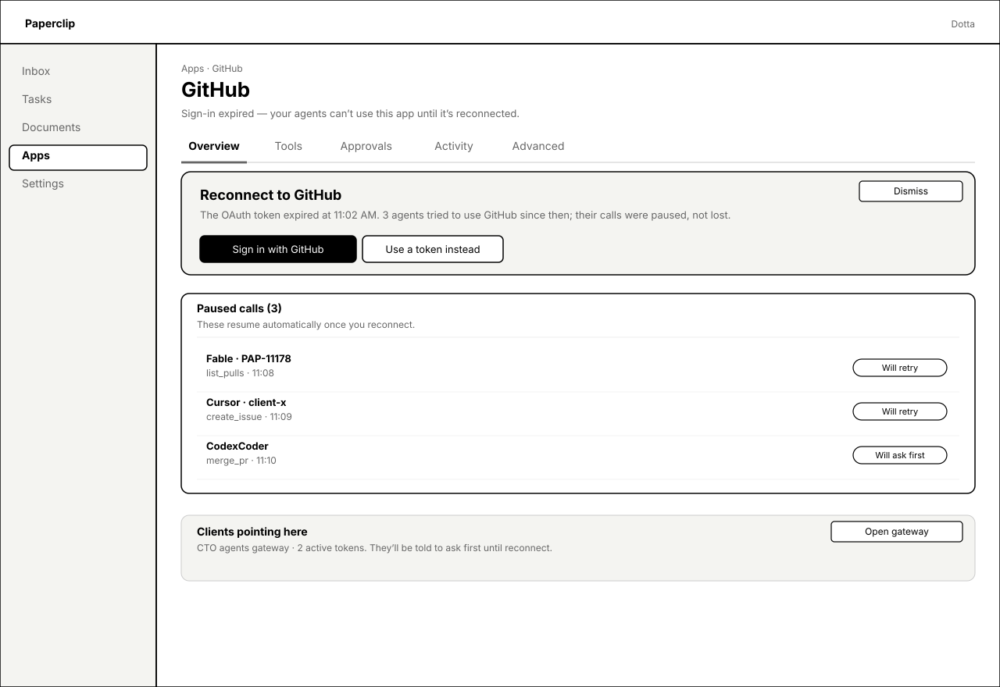
Pixels show
- Top banner: one clear sentence — Sign-in expired. Primary action is reconnect; secondary is paste-token fallback.
- "3 agents tried to use this since then; their calls were paused, not lost" — turns an outage into a controlled wait.
- Paused list previews Will retry vs Will ask first outcomes after reconnect, so the operator knows what happens next.
- "Clients pointing here" surfaces gateway impact — answers "do I need to tell anyone?"
AG14Elicitation passthrough card
When an MCP server returns an elicitation, Paperclip lifts it into a structured ask in the issue thread. Operator answers a typed field; the agent's call resumes with the answer attached.
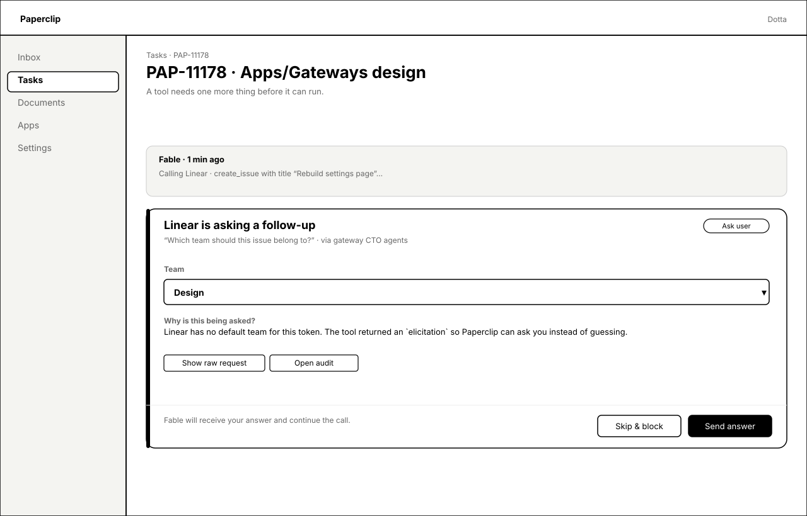
Pixels show
- "Ask user" chip distinguishes this from a normal approval interaction (PAP-11118).
- Typed field (dropdown / text / number depending on MCP elicitation schema) — not a free-text chat reply.
- Explanation block names the upstream and the reason, so the operator isn't filling a blank prompt.
- Two terminal states: Send answer (continues the call) and Skip & block (returns an elicitation_declined error to the agent).
AG15Responsive + empty/loading/error states
Four phone-width tiles showing empty (Gateways), loading (Gateway detail), error (Reachability), and mobile approval card. Below: an explicit spec checklist of cross-cutting state rules.
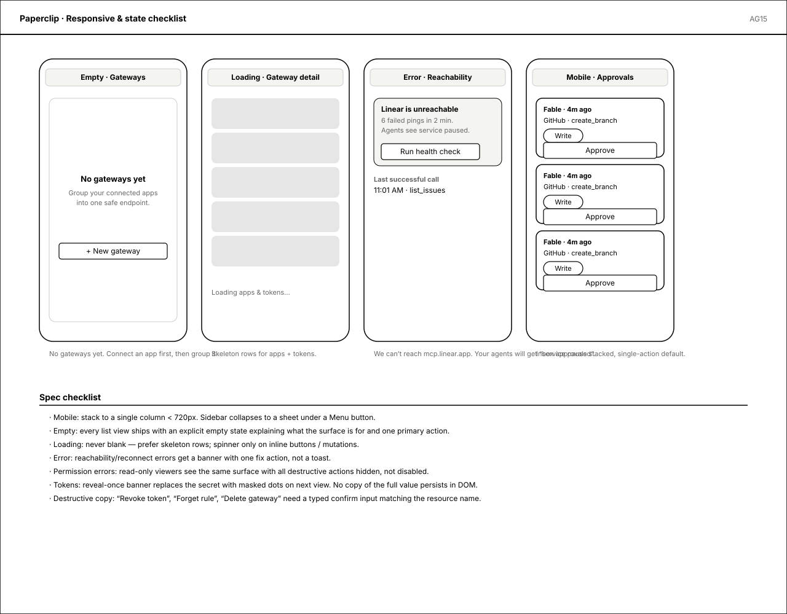
Pixels show
- Mobile stacks to a single column < 720px; sidebar collapses to a Menu sheet.
- Skeleton loaders match real row heights — no layout shift on data arrival.
- Reachability errors get a banner with a single fix action, not a toast.
- Reveal-once tokens stay masked on re-view; no full value lingers in DOM after the initial reveal.
- Destructive copy ("Revoke token", "Delete gateway") requires a typed-confirm input matching the resource name.
·Vocabulary map
Words the user reads, mapped from the internal model. Engineering keeps the right-hand terms in code; product keeps the left-hand terms in UI and docs.
| UI says | Code says | Notes |
|---|---|---|
| App | tool_application | Already shipped in PAP-10856. |
| Gateway | mcp_gateway | New product object. |
| Token | gateway_bearer_token | Distinct from agent-run pcgt_ tokens. |
| Off / Allowed / Ask first | policy_effect | Same vocab as Profiles + Rules. |
| Read / Write / Destructive | risk_class | Inferred at catalog time; editable per tool. |
| Connect with a link | remote_http connection wizard | Reused; see PAP-11088. |
| Paste config | mcp_json_import | Lifted from Advanced to Apps shell. |
| Ask user / Elicitation | mcp_elicitation_interaction | Maps to issue interaction. |
| Reconnect | credential_renewal_required | Includes OAuth refresh + bearer rotation. |
·What's reused vs new
To keep visual coherence, most of the AG surface composes existing components. Only six things are genuinely new.
Reused as-is
- Apps list pattern (PAP-10856), Apps Detail tabs + status chip (PAP-10859), Profiles language (PAP-10978).
- Rules / Policies sentence rows + outcome chips (PRA1–PRA6), Activity row pattern (PRA10–PRA11), Health card (PRA7–PRA9).
- Connect-an-app wizard (PAP-10839) and Connect-with-a-link entry point (PAP-11088).
- Issue-thread interaction card pattern (PAP-11118) for the elicitation card.
New components
GatewayList+GatewayRow(AG6) — new top-level concept.GatewayDetailOverviewwith the Who can use it binding chips (AG7).ClientSnippetsDialogtab-set per MCP client (AG8) — reusable for any future client.TokenTablewith reveal-once banner + triple-dot row menu (AG9).PolicyExplanationCard(AG11) — slot in the right-pane detail of any audit row.GatewayTestConsole(AG12) — pickable from any gateway page.
Tokens used (proposed)
- Spacing: existing
space-2/space-4/space-6; no new sizes. - Colors: existing ink / muted / soft / panel; no new palette.
- Status chip variants: reuse healthy, attention, paused, not_connected from Apps.
- One proposed addition: chip · destructive (filled-ink) for risk chips and the Destructive filter.
?Open questions for reviewer
Things I'd like the board to weigh in on before implementation issues are written.
- "Gateway" naming. The plan uses "MCP Gateway." Internally and in docs the word "gateway" is loaded — already used for gateway_sessions for agent runs. UI here uses just Gateway. If we want a distinct word ("Endpoint", "Surface", "Client app"), now's the time. Recommendation: keep "Gateway" for the prosumer and qualify in code (mcp_gateway, gateway_session).
- Approvals queue placement. AG10 puts approvals in Inbox. Alternative: a separate /apps/approvals page. Recommendation: Inbox first — meets users where they already triage; deep-link from Apps.
- Token reveal model. AG9 reveals once with a banner. Alternative: never reveal full value; download as a `.json` snippet. Recommendation: reveal-once with explicit "copy now" language — matches Cursor/Anthropic console conventions.
- Risk classification editability. AG4/AG5 show inferred risk chips. Should operators be able to change Destructive → Write? Recommendation: yes via the row menu, with an audit event — but never Destructive → Read.
- Test console scope. AG12 runs as the board. Should it support running as a specific agent ("test as Fable")? Recommendation: V1.5 — board first to ship the debugging value; per-agent next.
- External client tokens. AG9 has an Owner column. Are external client tokens minted via a different flow (e.g., shared link)? Recommendation: same Mint flow + a Send to teammate action in AG8.